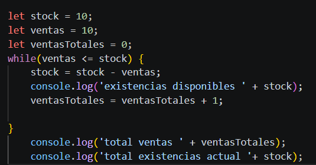

My blog Web

Mi primer proyecto web es un blog personal donde comparto experiencias, opiniones y reflexiones. Este proyecto también documenta mi evolución en el aprendizaje del desarrollo web y el desarrollo de software a través de su construcción continua impulsada por la curiosidad, la creatividad y la investigación.
tecnologias usadas mayo 2026: HTML, CSS, Git e inicios en Javascript.
Una de las cosas más importantes cuando se es autodidacta es saber donde buscar contenido relevante acorde con la ruta de aprendizaje popuesta. Existen miles de creadores de contenido que ofrecen fórmulas para aprender mas rapido, alcanzar el éxito en nuestras carreras o desarrollar nuevas habilidades. Además constantemente nos bombardean con cursos y productos de consumo que no siempre satisfacen la necesidad de adquirir los conocimientos necesarios para afianzar las bases solidas que buscamos.
Actualmente, aparte del contenido disponible en YouTube, MDN es mi principal fuente de consulta, ya que allí encuentro la informacion clara y confiable sobre los temas que quiero aprender. Además, utilizo ChatGPT como guía, ya que el contenido de MDN es muy amplio y, en muchos casos, requiere conocer con exactitud la temática a consultar.

Despues de estár practicado HTML y CSS durante un tiempo y tener una comprensión básica de esas tecnologías, decidí comenzar a aprender Javascript con un enfoque mas profundo que los tipicos ejercicios de logica que venía realizando. En este proceso han habido aciertos y frustraciones, así como ejercicios resueltos por mi propia cuenta y, otros con ayuda de ChatGPT.
En la captura de pantalla, se puede observar uno de los ejercicios que resolvi por mi cuenta, perteneciente a una de las temáticas que más dificultad me ha generado para interiorizar, como son los ciclos While y For.